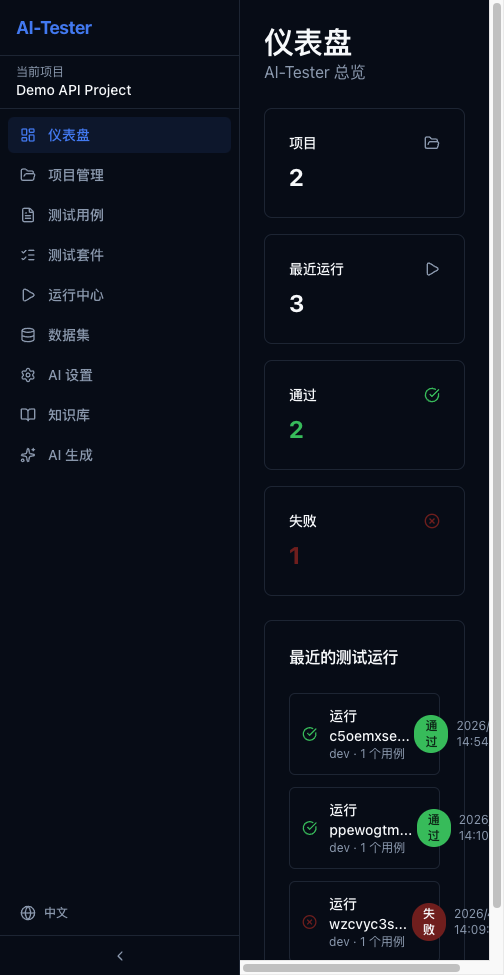

AI-Tester 平台简介
AI-Tester 是一个与 AI Coding Agent 配合使用的自动化 API 测试平台，帮助您快速构建、管理和执行 API 测试。

核心能力
- 项目管理 — 以项目为维度组织测试资源，支持多环境配置
- 测试用例编写 — 可视化步骤编辑器，支持 HTTP 请求、断言、变量提取、子用例调用、数据集加载 5 种步骤类型
- 测试套件 — 将多个用例组织为套件，一键批量执行
- 执行与结果 — 实时查看执行状态、请求/响应详情、断言结果
- 数据集 — 管理测试数据，驱动数据驱动的测试场景
- AI 自动生成 — 配置 LLM 后，基于 API 知识自动生成测试用例
典型使用流程
业务流程
graph LR
A[创建项目] --> B[录入 API 知识]
B --> C{选择方式}
C -->|手动| D[手动添加端点]
C -->|导入| E[OpenAPI/cURL 导入]
C -->|AI| F[AI 解析文本]
D --> G[编写/AI 生成用例]
E --> G
F --> G
G --> H[组装测试套件]
H --> I[选择环境执行]
I --> J[查看执行结果]
J --> K{通过?}
K -->|是| L[✅ 完成]
K -->|否| M[❌ 定位问题]
M --> G
系统访问
1
启动服务
在项目根目录执行 pnpm dev，等待所有子包构建完成。
2
访问 Web 界面
浏览器打开 http://localhost:5173 即可进入 AI-Tester 管理后台。
3
API 端点
后端 REST API 运行在 http://127.0.0.1:3100/api/v1，可直接通过 curl 或 Postman 调用。